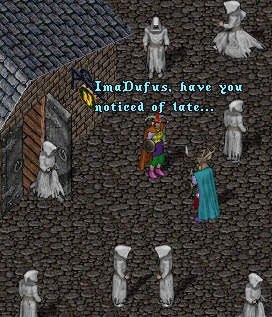
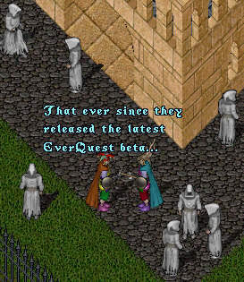
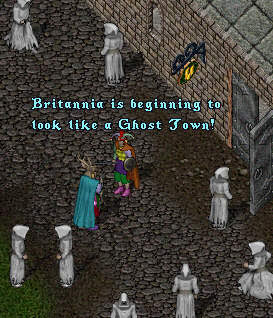

Episode 64: ImaNewbie has noticed that there seems to be something mysterious happening in his beloved country of Britannia.



What does the future hold for ImaNewbie? Will his countrymen desert him for the new lands of Norrath? Will he ever resume his search for Irma? Will Monica Lewinsky get a starring role in Police Academy 14? Stay 'tooned....